Question 409. A QoS profile is configured as shown in the image. The following throughput is realized: Class 3 traffic 325Mbps - Class 5 traffic 470Mbps - Class 7 traffic: 330Mbps - What happens as a result?

Question 401. An administrator connected a new fiber cable and transceiver to interface Ethernet1/1 on a Palo Alto Networks firewall. However, the link does not seem to be coming up. If an administrator were to troubleshoot, how would they confirm the transceiver type, tx-power, rx-power, vendor name, and part number via the CLI?
Question 402. An engineer wants to forward all decrypted traffic on a PA-850 firewall to a forensic tool with a decrypt mirror interface. Which statement is true regarding the configuration of the Decryption Port Mirroring feature?
Question 403. Which statement is true regarding a heatmap in a BPA report?
Question 404. An engineer is configuring secure web access (HTTPS) to a Palo Alto Networks firewall for management. Which profile should be configured to ensure that management access via web browsers is encrypted with a trusted certificate?
Question 405. In an existing deployment, an administrator with numerous firewalls and Panorama does not see any WildFire logs in Panorama. Each firewall has an active WildFire subscription. On each firewall, WildFire logs are available. This issue is occurring because forwarding of which type of logs from the firewalls to Panorama is missing?
Question 406. An administrator wants to configure the Palo Alto Networks Windows User-ID agent to map IP addresses to usernames. The company uses four Microsoft Active Directory servers and two Microsoft Exchange servers, which can provide logs for login events. All six servers have IP addresses assigned from the following subnet: 192.168.28.32/27. The Microsoft Active Directory servers reside in 192.168.28.32/28, and the Microsoft Exchange servers reside in 192.168.28.48/28. What information does the administrator need to provide in the User Identification > Discovery section?
Question 407. Refer to the diagram. Users at an internal system want to ssh to the SSH server. The server is configured to respond only to the ssh requests
coming from IP 172.16.15.1.
In order to reach the SSH server only from the Trust zone, which Security rule and NAT rule must be configured on the firewall?
Question 408. What is the best definition of the Heartbeat Interval?
Question 409. A QoS profile is configured as shown in the image. The following throughput is realized: Class 3 traffic 325Mbps - Class 5 traffic 470Mbps - Class 7 traffic: 330Mbps - What happens as a result?
Question 410. Which three options does Panorama offer for deploying dynamic updates to its managed devices?
(Choose three.)
Question 411. A network security engineer configured IP multicast in the virtual router to support a new application. Users in different network segments are reporting that they are unable to access the application. What must be enabled to allow an interface to forward multicast traffic?
Question 412. Review the screenshots and consider the following information: • FW-1 is assigned to the FW-1_DG device group and FW-2 is assigned to OFFICE_FW_DG • There are no objects configured in REGIONAL_DG and OFFICE_FW_DG device groups Which IP address will be pushed to the firewalls inside Address Object Server-1?

Question 413. Given the Sample Log Forwarding Profile shown, which two statements are true?
(Choose two.)

Question 414. Which benefit do policy rule UUIDs provide?
Question 415. A system administrator runs a port scan using the company tool as part of vulnerability check. The administrator finds that the scan is identified as a threat and is dropped by the firewall. After further investigating the logs the administrator finds that the scan is dropped in the Threat Logs. What should the administrator do to allow the tool to scan through the firewall?
Question 416. A customer wants to combine multiple Ethernet interfaces into a single virtual interface using link aggregation. What is the valid naming convention for aggregate interfaces?
Question 417. A company with already deployed Palo Alto firewalls has purchased their first Panorama server. The security team has already configured all firewalls with the Panorama IP address and added all the firewall serial numbers in Panorama. What are the next steps to migrate configuration from the firewalls to Panorama?
Question 418. Based on the screenshots above, and with no configuration inside the Template Stack itself, what access will the device permit on its Management port?
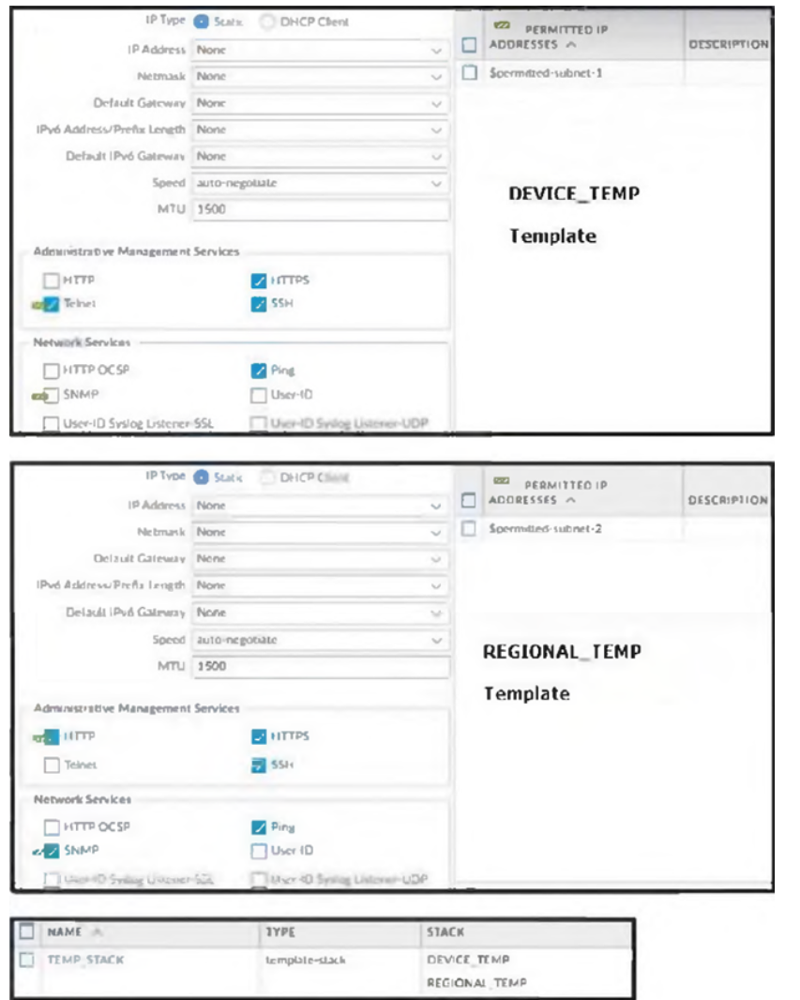Question 419. View the screenshots. A QoS profile and policy rules are configured as shown. Based on this information, which two statements are correct?
(Choose two.)
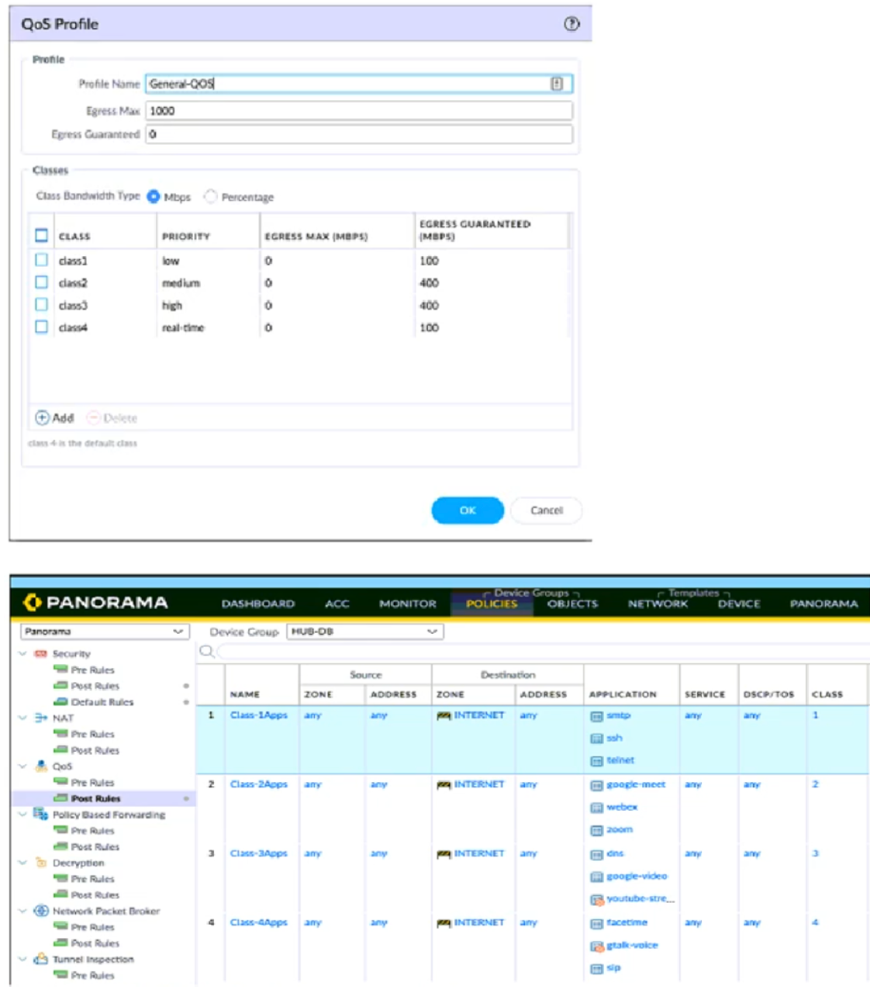Question 420. An engineer is attempting to resolve an issue with slow traffic. Which PAN-OS feature can be used to prioritize certain network traffic?
Question 421. An auditor is evaluating the configuration of Panorama and notices a discrepancy between the Panorama template and the local firewall configuration. When overriding the firewall configuration pushed from Panorama, what should you consider?
Question 422. What happens, by default, when the GlobalProtect app fails to establish an IPSec tunnel to the GlobalProtect gateway?
Question 423. Review the images. A firewall policy that permits web traffic includes the global-logs policy as depicted. What is the result of traffic that matches the “Alert -Threats” Profile Match List?

Question 424. An engineer troubleshooting a VPN issue needs to manually initiate a VPN tunnel from the CLI. Which CLI command can the engineer use?
Question 425. What is the dependency for users to access services that require authentication?
Question 426. An engineer is designing a deployment of multi-vsys firewalls. What must be taken into consideration when designing the device group structure?
Question 427. An engineer needs to collect User-ID mappings from the company’s existing proxies. What two methods can be used to pull this data from third party proxies?
(Choose two.)
Question 428. An engineer needs to configure SSL Forward Proxy to decrypt traffic on a PA-5260. The engineer uses a forward trust certificate from the enterprise PKI that expires December 31, 2025. The validity date on the PA-generated certificate is taken from what?
Question 429. A network administrator is troubleshooting an issue with Phase 2 of an IPSec VPN tunnel. The administrator determines that the lifetime needs to be changed to match the peer. Where should this change be made?
Question 430. Which statement about High Availability timer settings is true?
Question 431. A firewall administrator is trying to identify active routes learned via BGP in the virtual router runtime stats within the GUI. Where can they find this information?
Question 432. An engineer decides to use Panorama to upgrade devices to PAN-OS 10.2. Which three platforms support PAN-OS 10.2?
(Choose three.)
Question 433. As a best practice, logging at session start should be used in which case?
Question 434. What must be configured to apply tags automatically to User-ID logs?
Question 435. The profile is configured to provide granular defense against targeted flood attacks for specific critical systems that are accessed by users from the internet. Which profile is the engineer configuring?
Question 436. Which states will a pair of firewalls be in if their HA Group ID is mismatched?
Question 437. An engineer troubleshooting a site-to-site VPN finds a Security policy dropping the peer’s IKE traffic at the edge firewall. Both VPN peers are behind a NAT, and NAT-T is enabled. How can the engineer remediate this issue?
Question 438. An administrator wants to grant read-only access to all firewall settings, except administrator accounts, to a new-hire colleague in the IT department. Which dynamic role does the administrator assign to the new-hire colleague?
Question 439. An engineer has been given approval to upgrade their environment to PAN-OS 10.2. The environment consists of both physical and virtual firewalls, a virtual Panorama HA pair, and virtual log collectors. What is the recommended order when upgrading to PAN-OS 10.2?
Question 440. Review the screenshot of the Certificates page. An administrator for a small LLC has created a series of certificates as shown, to use for a planned Decryption roll out. The administrator has also installed the self-signed root certificate in all client systems. When testing, they noticed that every time a user visited an SSL site, they received unsecured website warnings. What is the cause of the unsecured website warnings?
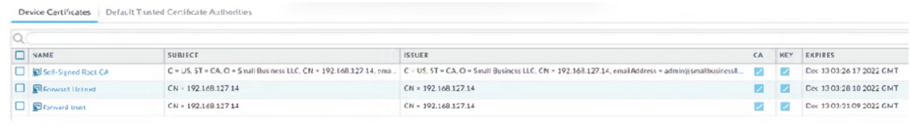Question 441. An engineer is tasked with deploying SSL Forward Proxy decryption for their organization. What should they review with their leadership before implementation?
Question 442. Four configuration choices are listed, and each could be used to block access to a specific URL. If you configured each choice to block the same URL, then which choice would be evaluated last in the processing order to block access to the URL?
Question 443. A network security engineer needs to enable Zone Protection in an environment that makes use of Cisco TrustSec Layer 2 protections. What should the engineer configure within a Zone Protection profile to ensure that the TrustSec packets are identified and actions are taken upon them?
Question 444. How should an administrator enable the Advance Routing Engine on a Palo Alto Networks firewall?
Question 445. An administrator wants to enable Palo Alto Networks cloud services for Device Telemetry and IoT. Which type of certificate must be installed?
Question 446. Which Palo Alto Networks tool provides configuration heat map displays for security controls?
Question 447. An engineer is configuring SSL Inbound Inspection for public access to a company’s application. Which certificate(s) need to be installed on the firewall to ensure that inspection is performed successfully?
Question 448. A network security administrator wants to begin inspecting bulk user HTTPS traffic flows egressing out of the internet edge firewall.
Which certificate is the best choice to configure as an SSL Forward Trust certificate?
Question 449. A company has configured a URL Filtering profile with override action on their firewall.
Which two profiles are needed to complete the configuration?
(Choose two.)
Question 450. Which three authentication types can be used to authenticate users?
(Choose three.)
Question 451. Which feature checks Panorama connectivity status after a commit?
Question 452. What are two explanations for this type of issue?
(Choose two.)

Question 453. A network administrator wants to deploy SSL Forward Proxy decryption. What two attributes should a forward trust certificate have? (Choose two.)
Question 454. An administrator is assisting a security engineering team with a decryption rollout for inbound and forward proxy traffic. Incorrect firewall sizing is
preventing the team from decrypting all of the traffic they want to decrypt.
Which three items should be prioritized for decryption?
(Choose three.)
Question 455. During a laptop-replacement project, remote users must be able to establish a GlobalProtect VPN connection to the corporate network before
logging in to their new Windows 10 endpoints.
The new laptops have the 5.2.10 GlobalProtect Agent installed, so the administrator chooses to use the Connect Before Logon feature to solve
this issue.
What must be configured to enable the Connect Before Logon feature?
Question 456. Using the above screenshot of the ACC, what is the best method to set a global filter, narrow down Blocked User Activity, and locate the user(s) that could be compromised by a botnet?
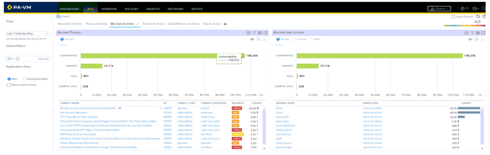Question 457. What is the best description of the Cluster Synchronization Timeout (min)?
Question 458. Which two policy components are required to block traffic in real time using a dynamic user group (DUG)?
(Choose two.)
Question 459. An administrator is receiving complaints about application performance degradation. After checking the ACC, the administrator observes that
there is an excessive amount of SSL traffic.
Which three elements should the administrator configure to address this issue?
(Choose three.)
Question 460. An administrator creates a custom application containing Layer 7 signatures. The latest application and threat dynamic update is downloaded to the same firewall. The update contains an application that matches the same traffic signatures as the custom application. Which application will be used to identify traffic traversing the firewall?
Question 461. An administrator creates an application-based security policy rule and commits the change to the firewall.
Which two methods should be used to identify the dependent applications for the respective rule?
(Choose two.)
Question 462. An engineer is creating a template and wants to use variables to standardize the configuration across a large number of devices.
Which two variable types can be defined?
(Choose two.)
Question 463. Users have reported an issue when they are trying to access a server on your network. The requests aren't taking the expected route. You discover
that there are two different static routes on the firewall for the server.
What is used to determine which route has priority?
Question 464. A company has configured GlobalProtect to allow their users to work from home. A decrease in performance for remote workers has been reported during peak-use hours. Which two steps are likely to mitigate the issue?
(Choose two.)
Question 465. Which log type would provide information about traffic blocked by a Zone Protection profile?
Question 466. Where can an administrator see both the management-plane and data-plane CPU utilization in the WebUI?
Question 467. An administrator wants to perform HIP checks on the endpoints to ensure their security posture. Which license is required on all Palo Alto Networks next-generation firewalls that will be performing the HIP checks?
Question 468. A network security administrator wants to configure SSL inbound inspection.
Which three components are necessary for inspecting the HTTPS traffic as it enters the firewall?
(Choose three.)
Question 469. You have been asked to implement GlobalProtect for your organization. You have decided on https://gp.mycompany.com for your Portal, and have received the certificate and key. Where would you navigate to on the firewall UI to import the certificate?
Question 470. An engineer has been asked to limit which routes are shared by running two different areas within an OSPF implementation. However, the devices
share a common link for communication.
Which virtual router configuration supports running multiple instances of the OSPF protocol over a single link?
Question 471. An administrator is configuring a Panorama device group. Which two objects are configurable?
(Choose two.)
Question 472. An administrator wants to use LDAP, TACACS+, and Kerberos as external authentication services for authenticating users.
What should the administrator be aware of regarding the authentication sequence, based on the Authentication profiles in the order Kerberos,
LDAP, and TACACS+?
Question 473. An administrator has two pairs of firewalls within the same subnet. Both pairs of firewalls have been configured to use High Availability mode with Active/Passive. The ARP tables for upstream routes display the same MAC address being shared for some of these firewalls. What can be configured on one pair of firewalls to modify the MAC addresses so they are no longer in conflict?
Question 474. The same route appears in the routing table three times using three different protocols. Which mechanism determines how the firewall chooses which route to use?
Question 475. An engineer has discovered that certain real-time traffic is being treated as best effort due to it exceeding defined bandwidth. Which QoS setting should the engineer adjust?
Question 476. A Security policy rule is configured with a Vulnerability Protection Profile and an action of “Deny”. Which action will this configuration cause on the matched traffic?
Question 477. Which feature detects the submission of corporate login information into website forms?
Question 478. Which three firewall multi-factor authentication factors are supported by PAN-OS?
(Choose three.)
Question 479. An administrator needs to identify which NAT policy is being used for internet traffic. From the GUI of the firewall, how can the administrator identify which NAT policy is in use for a traffic flow?
Question 480. Which three external services perform both authentication and authorization for administration of firewalls?
(Choose three.)
Question 481. A firewall administrator has been tasked with ensuring that all firewalls forward System logs to Panorama. In which section is this configured?
Question 482. A customer would like to support Apple Bonjour in their environment for ease of configuration. Which type of interface in needed on their PA-3200 Series firewall to enable Bonjour Reflector in a segmented network?
Question 483. An engineer is bootstrapping a VM-Series Firewall. Other than the /config folder, which three directories are mandatory as part of the bootstrap package directory structure?
(Choose three.)
Question 484. A company requires the firewall to block expired certificates issued by internet-hosted websites. The company plans to implement decryption in the future, but it does not perform SSL Forward Proxy decryption at this time. Without the use of SSL Forward Proxy decryption, how is the firewall still able to identify and block expired certificates issued by internet-hosted websites?
Question 485. A company is looking to increase redundancy in their network. Which interface type could help accomplish this?
Question 486. An auditor has requested that roles and responsibilities be split inside the security team. Group A will manage templates, and Group B will manage device groups inside Panorama. Which two specific firewall configurations will Group B manage?
(Choose two.)
Question 487. An engineer is deploying VoIP and needs to ensure that voice traffic is treated with the highest priority on the network. Which QoS priority should be assigned to such an application?
Question 488. A network security administrator wants to enable Packet-Based Attack Protection in a Zone Protection profile. What are two valid ways to enable Packet-Based Attack Protection?
(Choose two.)
Question 489. Given the following snippet of a WildFire submission log, did the end-user get access to the requested information and why or why not?

Question 490. The decision to upgrade to PAN-OS 10.2 has been approved. The engineer begins the process by upgrading the Panorama servers, but gets an error when trying to install. When performing an upgrade on Panorama to PAN-OS 10.2, what is the potential cause of a failed install?
Question 491. How can Panorama help with troubleshooting problems such as high CPU or resource exhaustion on a managed firewall?
Question 492. An administrator is configuring SSL decryption and needs to ensure that all certificates for both SSL Inbound inspection and SSL Forward Proxy are installed properly on the firewall. When certificates are being imported to the firewall for these purposes, which three certificates require a private key?
(Choose three.)
Question 493. An administrator would like to determine which action the firewall will take for a specific CVE. Given the screenshot below, where should the administrator navigate to view this information?

Question 494. An administrator has configured OSPF with Advanced Routing enabled on a Palo Alto Networks firewall running PAN-OS 10.2. After OSPF was configured the administrator noticed that OSPF routes were not being learned. Which two actions could an administrator take to troubleshoot this issue?
(Choose two.)
Question 495. In an HA failover scenario what happens with sessions decrypted by a SSL Forward Proxy Decryption policy?
Question 496. An administrator just enabled HA Heartbeat Backup on two devices. However, the status on the firewall's dashboard is showing as down. What could an administrator do to troubleshoot the issue?
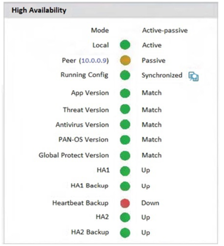Question 497. An engineer troubleshoots an issue that causes packet drops. Which command should the engineer run in the CLI to see if packet buffer protection is enabled and activated?
Question 498. An engineer configures SSL decryption in order to have more visibility to the internal users’ traffic when it is egressing the firewall. Which three types of interfaces support SSL Forward Proxy?
(Choose three.)
Question 499. If an administrator wants to apply QoS to traffic based on source, what must be specified in a QoS policy rule?
Question 500. An engineer reviews high availability (HA) settings to understand a recent HA failover event. Review the screenshot below. Which timer determines how long the passive firewall will wait before taking over as the active firewall after losing communications with the HA peer?
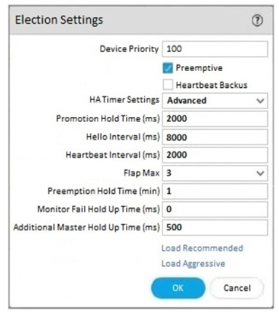Question 501. A firewall engineer creates a destination static NAT rule to allow traffic from the internet to a webserver hosted behind the edge firewall. The preNAT IP address of the server is 153.6.12.10, and the post-NAT IP address is 192.168.10.10. Refer to the routing and interfaces information below. What should the NAT rule destination zone be set to?
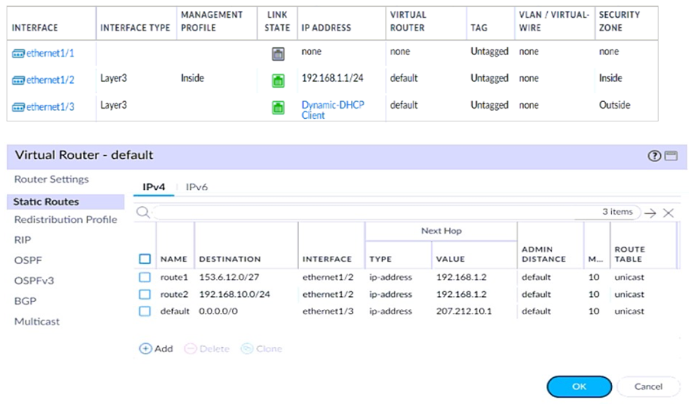Question 502. A consultant deploys a PAN-OS 11.0 VM-Series firewall with the Web Proxy feature in Transparent Proxy mode. Which three elements must be in place before a transparent web proxy can function?
(Choose three.)
Question 503. Which source is the most reliable for collecting User-ID user mapping?
Question 504. Which type of zone will allow different virtual systems to communicate with each other?
Question 505. An organization is interested in migrating from their existing web proxy architecture to the Web Proxy feature of their PAN-OS 11.0 firewalls. Currently, HTTP and SSL requests contain the destination IP address of the web server and the client browser is redirected to the proxy. Which PAN-OS proxy method should be configured to maintain this type of traffic flow?
Question 506. An engineer discovers the management interface is not routable to the User-ID agent. What configuration is needed to allow the firewall to communicate to the User-ID agent?
Question 507. An engineer receives reports from users that applications are not working and that websites are only partially loading in an asymmetric environment. After investigating, the engineer observes the flow_tcp_non_syn_drop counter increasing in the show counters global output. Which troubleshooting command should the engineer use to work around this issue?
Question 508. Where is Palo Alto Networks Device Telemetry data stored on a firewall with a device certificate installed?
Question 509. Which GlobalProtect gateway setting is required to enable split-tunneling by access route, destination domain, and application?
Question 510. A superuser is tasked with creating administrator accounts for three contractors. For compliance purposes, all three contractors will be working with different device-groups in their hierarchy to deploy policies and objects. Which type of role-based access is most appropriate for this project?
Question 511. An administrator connects four new remote offices to the corporate data center. The administrator decides to use the Large Scale VPN (LSVPN) feature on the Palo Alto Networks next-generation firewall. What should the administrator configure in order to connect the sites?
Question 512. A customer wants to set up a site-to-site VPN using tunnel interfaces. What format is the correct naming convention for tunnel interfaces?
Question 513. An engineer notices that the tunnel monitoring has been failing for a day and the VPN should have failed over to a backup path. What part of the network profile configuration should the engineer verify?
Question 514. Which three multi-factor authentication methods can be used to authenticate access to the firewall?
(Choose three.)
Question 515. Which two profiles should be configured when sharing tags from threat logs with a remote User-ID agent?
(Choose two.)
Question 516. What is the PAN-OS NPTv6 feature based on RFC 6296 used for?
Question 517. An administrator has been tasked with deploying SSL Forward Proxy. Which two types of certificates are used to decrypt the traffic?
(Choose two.)
Question 518. An engineer is deploying multiple firewalls with common configuration in Panorama. What are two benefits of using nested device groups?
(Choose two.)
Question 519. A network security administrator wants to inspect HTTPS traffic from users as it egresses through a firewall to the Internet/Untrust zone from trusted network zones. The security admin wishes to ensure that if users are presented with invalid or untrusted security certificates, the user will see an untrusted certificate warning. What is the best choice for an SSL Forward Untrust certificate?
Question 520. After implementing a new NGFW, a firewall engineer sees a VoIP traffic issue going through the firewall. After troubleshooting, the engineer finds that the firewall performs NAT on the voice packets payload and opens dynamic pinholes for media ports. What can the engineer do to solve the VoIP traffic issue?
Question 521. After importing a pre-configured firewall configuration to Panorama, what step is required to ensure a commit/push is successful without duplicating local configurations?
Question 522. Which new PAN-OS 11.0 feature supports IPv6 traffic?
Question 523. If a URL is in multiple custom URL categories with different actions, which action will take priority?
Question 524. An engineer is reviewing the following high availability (HA) settings to understand a recent HA failover event. Which timer determines the frequency between packets sent to verify that the HA functionality on the other HA firewall is operational?
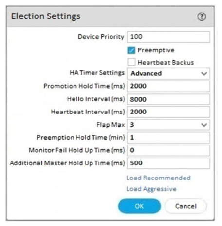Question 525. Which three items must be configured to implement application override?
(Choose three.)
Question 526. An engineer is configuring a firewall with three interfaces:
• MGT connects to a switch with internet access.
• Ethernet1/1 connects to an edge router.
• Ethernet1/2 connects to a virtualization network.
The engineer needs to configure dynamic updates to use a dataplane interface for internet traffic.
What should be configured in Setup > Services > Service Route Configuration to allow this traffic?
Question 527. An organization conducts research on the benefits of leveraging the Web Proxy feature of PAN-OS 11.0.
What are two benefits of using an explicit proxy method versus a transparent proxy method?
(Choose two.)
Question 528. Which three external authentication services can the firewall use to authenticate admins into the Palo Alto Networks NGFW without creating administrator account on the local firewall?
(Choose three.)
Question 529. With the default TCP and UDP settings on the firewall, what will be the identified application in the following session?

Question 530. To ensure that a Security policy has the highest priority, how should an administrator configure a Security policy in the device group hierarchy?
Question 531. Based on the graphic, which statement accurately describes the output shown in the Server Monitoring panel?
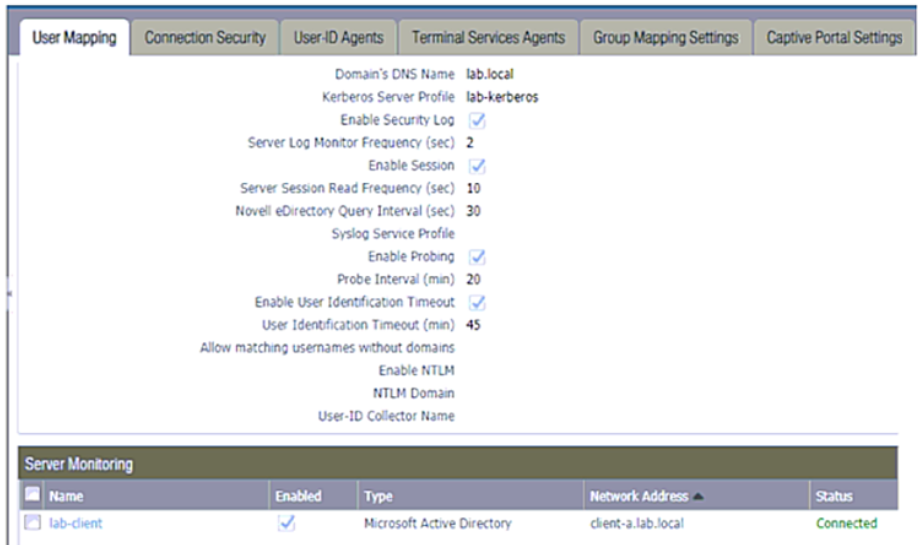Question 532. What can be used as an Action when creating a Policy-Based Forwarding (PBF) policy?
Question 533. An engineer manages a high availability network and requires fast failover of the routing protocols. The engineer decides to implement BFD.
Which three dynamic routing protocols support BFD?
(Choose three.)
Question 534. A company has recently migrated their branch office’s PA-220s to a centralized Panorama. This Panorama manages a number of PA-7000 Series
and PA-5200 Series devices. All device group and template configuration is managed solely within Panorama.
They notice that commit times have drastically increased for the PA-220s after the migration.
What can they do to reduce commit times?
Question 535. An administrator is troubleshooting why video traffic is not being properly classified.
If this traffic does not match any QoS classes, what default class is assigned?
Question 536. An administrator notices that an interface configuration has been overridden locally on a firewall. They require all configuration to be managed
from Panorama and overrides are not allowed.
What is one way the administrator can meet this requirement?
Question 537. Where can a service route be configured for a specific destination IP?
Question 538. Phase two of a VPN will not establish a connection. The peer is using a policy-based VPN configuration.
What part of the configuration should the engineer verify?
Question 539. Information Security is enforcing group-based policies by using security-event monitoring on Windows User-ID agents for IP-to-User mapping in
the network. During the rollout, Information Security identified a gap for users authenticating to their VPN and wireless networks.
Root cause analysis showed that users were authenticating via RADIUS and that authentication events were not captured on the domain
controllers that were being monitored. Information Security found that authentication events existed on the Identity Management solution (IDM).
There did not appear to be direct integration between PAN-OS and the IDM solution.
How can Information Security extract and learn IP-to-user mapping information from authentication events for VPN and wireless users?
Question 540. An administrator troubleshoots an issue that causes packet drops.
Which log type will help the engineer verify whether packet buffer protection was activated?
Question 541. An engineer creates a set of rules in a Device Group (Panorama) to permit traffic to various services for a specific LDAP user group.
What needs to be configured to ensure Panorama can retrieve user and group information for use in these rules?
Question 542. Review the information below. A firewall engineer creates a U-NAT rule to allow users in the trust zone access to a server in the same zone by
using an external, public NAT IP for that server.
Given the rule below, what change should be made to make sure the NAT works as expected?

Question 543. An engineer is configuring a template in Panorama which will contain settings that need to be applied to all firewalls in production.
Which three parts of a template an engineer can configure?
(Choose three.)
Question 544. A firewall engineer reviews the PAN-OS GlobalProtect application and sees that it implicitly uses web-browsing and depends on SSL.
When creating a new rule, what is needed to allow the application to resolve dependencies?
Question 545. In a security-first network, what is the recommended threshold value for apps and threats to be dynamically updated?
Question 546. An engineer configures a specific service route in an environment with multiple virtual systems instead of using the inherited global service route
configuration.
What type of service route can be used for this configuration?
Question 547. An administrator is receiving complaints about application performance degradation. After checking the ACC, the administrator observes that
there is an excessive amount of VoIP traffic.
Which three elements should the administrator configure to address this issue?
(Choose three.)
Question 548. What are three tasks that cannot be configured from Panorama by using a template stack?
(Choose three.)
Question 549. Based on the screenshots above, what is the correct order in which the various rules are deployed to firewalls inside the DATACENTER_DG device group?
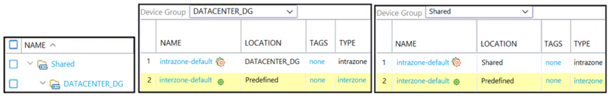Question 550. A company wants to implement threat prevention to take action without redesigning the network routing.
What are two best practice deployment modes for the firewall?
(Choose two.)
Question 551. Which operation will impact the performance of the management plane?
Question 552. Which type of policy in Palo Alto Networks firewalls can use Device-ID as a match condition?
Question 553. Why would a traffic log list an application as "not-applicable"?
Question 554. What must be configured to apply tags automatically based on User-ID logs?
Question 555. A firewall engineer creates a NAT rule to translate IP address 1.1.1.10 to 192.168.1.10. The engineer also plans to enable DNS rewrite so that the
firewall rewrites the IPv4 address in a DNS response based on the original destination IP address and translated destination IP address configured
for the rule. The engineer wants the firewall to rewrite a DNS response of 1.1.1.10 to 192.168.1.10.
What should the engineer do to complete the configuration?
Question 556. An engineer is monitoring an active/active high availability (HA) firewall pair.
Which HA firewall state describes the firewall that is experiencing a failure of a monitored path?
Question 557. You are auditing the work of a co-worker and need to verify that they have matched the Palo Alto Networks Best Practices for Anti-Spyware
Profiles.
For which three severity levels should single-packet captures be enabled to meet the Best Practice standard?
(Choose three.)
Question 558. In the New App Viewer under Policy Optimizer, what does the compare option for a specific rule allow an administrator to compare?
Question 559. Given the following snippet of a WildFire submission log, did the end user successfully download a file?
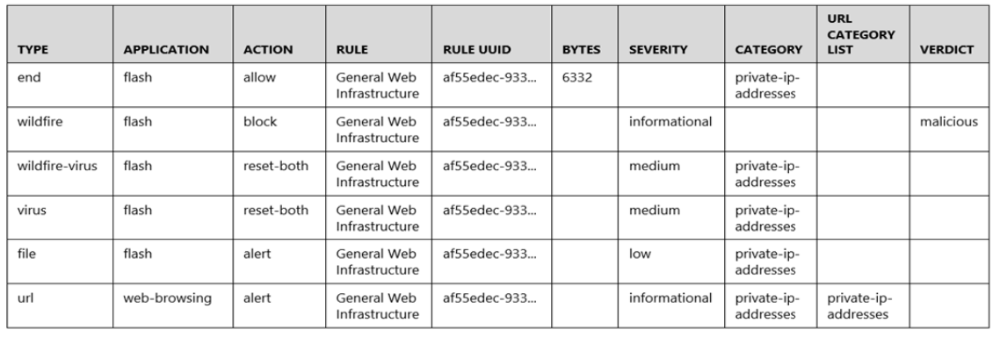Question 560. Which two factors should be considered when sizing a decryption firewall deployment?
(Choose two.)
Question 561. After switching to a different WAN connection, users have reported that various websites will not load, and timeouts are occurring. The web
servers work fine from other locations.
The firewall engineer discovers that some return traffic from these web servers is not reaching the users behind the firewall. The engineer later
concludes that the maximum transmission unit (MTU) on an upstream router interface is set to 1400 bytes.
The engineer reviews the following CLI output for ethernet1/1.
Which setting should be modified on ethernet1/1 to remedy this problem?
Question 562. An engineer configures a new template stack for a firewall that needs to be deployed. The template stack should consist of four templates
arranged according to the diagram.
Which template values will be configured on the firewall if each template has an SSL/TLS Service profile configured named Management?

Question 563. An administrator configures two VPN tunnels to provide for failover and uninterrupted VPN service.
What should an administrator configure to enable automatic failover to the backup tunnel?
Question 564. An administrator configures a site-to-site IPsec VPN tunnel between a PA-850 and an external customer on their policy-based VPN devices.
What should an administrator configure to route interesting traffic through the VPN tunnel?
Question 565. A firewall engineer creates a new App-ID report under Monitor > Reports > Application Reports > New Applications to monitor new applications on
the network and better assess any Security policy updates the engineer might want to make.
How does the firewall identify the New App-ID characteristic?
Question 566. An engineer is monitoring an active/active high availability (HA) firewall pair.
Which HA firewall state describes the firewall that is currently processing traffic?
Question 567. An engineer needs to configure a standardized template for all Panorama-managed firewalls. These settings will be configured on a template
named "Global" and will be included in all template stacks.
Which three settings can be configured in this template?
(Choose three.)
Question 568. An organization wants to begin decrypting guest and BYOD traffic.
Which NGFW feature can be used to identify guests and BYOD users, instruct them how to download and install the CA certificate, and clearly
notify them that their traffic will be decrypted?
Question 569. Which two key exchange algorithms consume the most resources when decrypting SSL traffic?
(Choose two.)
Question 570. An engineer troubleshoots a Panorama-managed firewall that is unable to reach the DNS servers configured via a global template. As a
troubleshooting step, the engineer needs to configure a local DNS server in place of the template value.
Which two actions can be taken to ensure that only the specific firewall is affected during this process?
(Choose two.)
Question 571. An engineer troubleshoots a high availability (HA) link that is unreliable.
Where can the engineer view what time the interface went down?
Question 572. A consultant advises a client on designing an explicit Web Proxy deployment on PAN-OS 11.0. The client currently uses RADIUS authentication in
their environment.
Which two pieces of information should the consultant provide regarding Web Proxy authentication?
(Choose two.)
Question 573. A customer wants to deploy User-ID on a Palo Alto Networks NGFW with multiple vsys. One of the vsys will support a GlobalProtect portal and
gateway. The customer uses Windows Active Directory for authentication.
What is the most operationally efficient way to redistribute the most accurate IP addresses to username mappings?
Question 574. A security engineer wants to upgrade the company's deployed firewalls from PAN-OS 10.1 to 11.0.x to take advantage of the newTLSv1.3 support
for management access.
What is the recommended upgrade path procedure from PAN-OS 10.1 to 11.0.x?
Question 575. Which two actions must an engineer take to configure SSL Forward Proxy decryption?
(Choose two.)
A firewall engineer supports a mission-critical network that has zero tolerance for application downtime. A best-practice action taken by the engineer is to configure an Applications and Threats update schedule with a new App-ID threshold of 48 hours. Which two additional best-practice guideline actions should be taken with regard to dynamic updates?
(Choose two.)
When a new firewall joins a high availability (HA) cluster, the cluster members will synchronize all existing sessions over which HA port?
What can the Log Forwarding built-in action with tagging be used to accomplish?
An administrator notices interface ethernet1/2 failed on the active firewall in an active I passive firewall high availability(HA) pair. Based on the image below, what - if any - action was taken by the active firewall when the link failed?

A firewall administrator wants to be able to see all NAT sessions that are going through a firewall with source NAT. Which CLI command can the administrator use?
An engineer needs to configure a standardized template for all Panorama-managed firewalls. These settings will be configured on a template named "Global" and will be included in all template stacks. Which three settings can be configured in this template?
(Choose three.)
All firewalls at a company are currently forwarding logs to Palo Alto Networks log collectors. The company also wants to deploy a syslog server and forward all firewall logs to the syslog server and to the log collectors. There is a known logging peak time during the day and the security team has asked the firewall engineer to determine how many logs per second the current Palo Alto Networks log collectors are processing at that particular time. Which method is the most time-efficient to complete this task?
A firewall engineer is configuring quality of service (QoS) policy for the IP address of a specific server in an effort to limit the bandwidth consumed by frequent downloads of large files from the internet. Which combination of pre-NAT and/or post-NAT information should be used in the QoS rule?
The decision to upgrade PAN-OS has been approved. The engineer begins the process by upgrading the Panorama servers, but gets an error when attempting the install. When performing an upgrade on Panorama to PAN-OS, what is the potential cause of a failed install?
Following a review of firewall logs for traffic generated by malicious activity, how can an administrator confirm that WildFire has identified a virus?
A firewall engineer is managing a Palo Alto Networks NGFW which is not in line of any DHCP traffic. Which interface mode can the engineer use to generate Enhanced Application logs (EALs) for classifying IoT devices while receiving broadcast DHCP traffic?
An administrator is considering deploying WildFire globally. What should the administrator consider with regards to the WildFire infrastructure?
Which log type is supported in the Log Forwarding profile?
A firewall engineer needs to update a company’s Panorama-managed firewalls to the latest version of PAN-OS. Strict security requirements are blocking internet access to Panorama and to the firewalls. The PAN-OS images have previously been downloaded to a secure host on the network. Which path should the engineer follow to deploy the PAN-OS images to the firewalls?
Which conditions must be met when provisioning a high availability (HA) cluster?
(Choose two.)
Why are external zones required to be configured on a Palo Alto Networks NGFW in an environment with multiple virtual systems?
Which two are required by IPSec in transport mode?
(Choose two.)
A firewall engineer needs to patch the company’s Palo Alto Networks firewalls to the latest version of PAN-OS. The company manages its firewalls by using Panorama. Logs are forwarded to Dedicated Log Collectors, and file samples are forwarded to WildFire appliances for analysis. What must the engineer consider when planning deployment?
Which rule type controls end user SSL traffic to external websites?
An internal audit team has requested additional information to be included inside traffic logs forwarded from Palo Alto Networks firewalls to an internal syslog server. Where can the firewall engineer define the data to be added into each forwarded log?
When you troubleshoot an SSL Decryption issue, which PAN-OS CLI command do you use to check the details of the Forward Trust certificate, Forward Untrust certificate, and SSL Inbound Inspection certificate?
Which two items must be configured when implementing application override and allowing traffic through the firewall?
(Choose two.)
A firewall administrator is configuring an IPSec tunnel between Site A and Site B. The Site A firewall uses a DHCP assigned address on the outside interface of the firewall, and the Site B firewall uses a static IP address assigned to the outside interface of the firewall. However, the use of dynamic peering is not working. Refer to the two sets of configuration settings provided. Which two changes will allow the configurations to work?
(Choose two.)
Site A configuration: 
Site B configuration: 
Which server platforms can be monitored when a company is deploying User-ID through server monitoring in an environment with diverse directory services?
An engineer is monitoring an active/passive high availability (HA) firewall pair. Which HA firewall state describes the firewall that is currently processing traffic?
A root cause analysis investigation into a recent security incident reveals that several decryption rules have been disabled. The security team wants to generate email alerts when decryption rules are changed. How should email log forwarding be configured to achieve this goal?
An engineer has been given approval to upgrade their environment to the latest of PAN-OS. The environment consists of both physical and virtual firewalls, a virtual Panorama HA pair, and virtual log collectors. What is the recommended order of operational steps when upgrading?
An administrator has a Palo Alto Networks NGFW. All security subscriptions and decryption are enabled and the system is running close to its resource limits. Knowing that using decryption can be resource-intensive, how can the administrator reduce the load on the firewall?
A firewall engineer has determined that, in an application developed by the company’s internal team, sessions often remain idle for hours before the client and server exchange any data. The application is also currently identified as unknown-tcp by the firewalls. It is determined that because of a high level of trust, the application does not require to be scanned for threats, but it needs to be properly identified in Traffic logs for reporting purposes. Which solution will take the least time to implement and will ensure the App-ID engine is used to identify the application?
What happens when the log forwarding built-in action with tagging is used?
A firewall engineer creates a source NAT rule to allow the company’s internal private network 10.0.0.0/23 to access the internet. However, for security reasons, one server in that subnet (10.0.0.10/32) should not be allowed to access the internet, and therefore should not be translated with the NAT rule. Which set of steps should the engineer take to accomplish this objective?